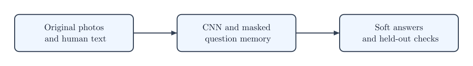
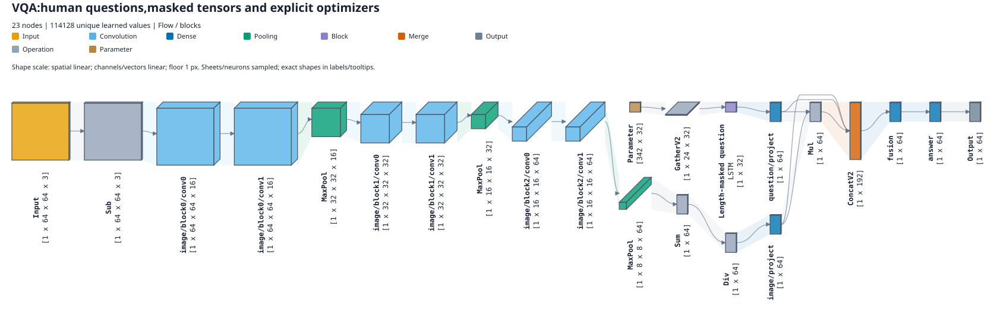
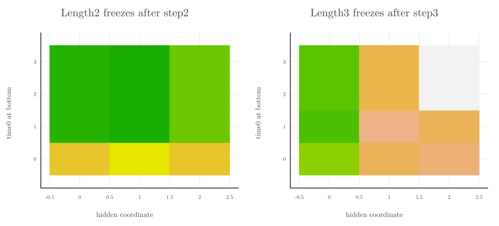
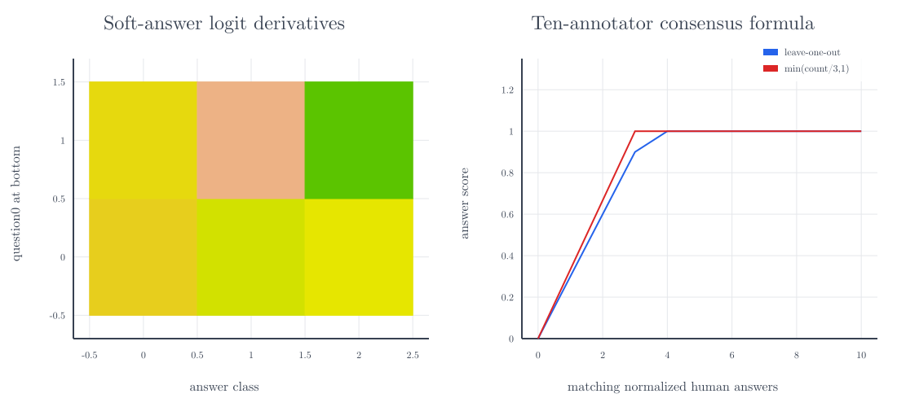
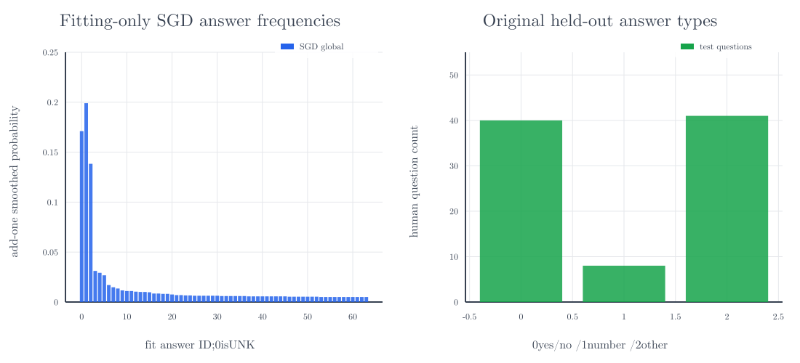
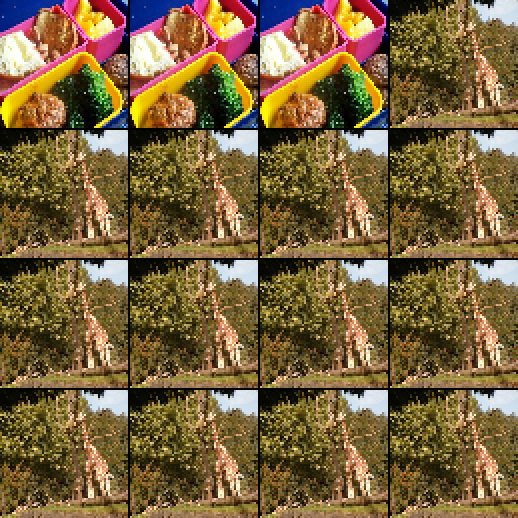
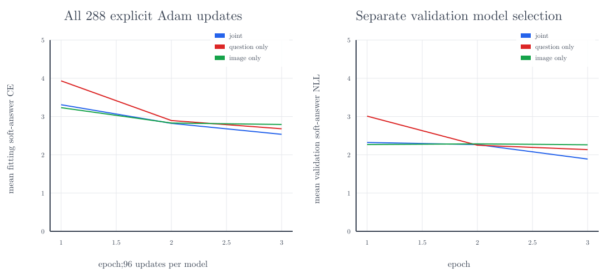
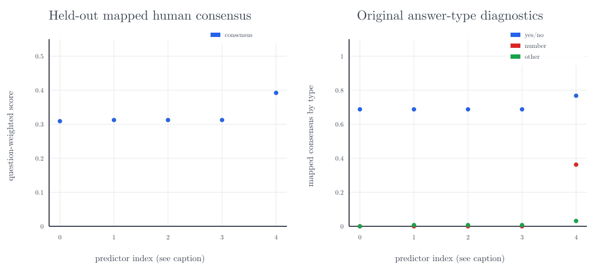
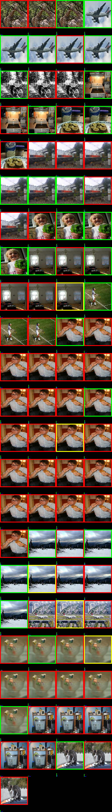
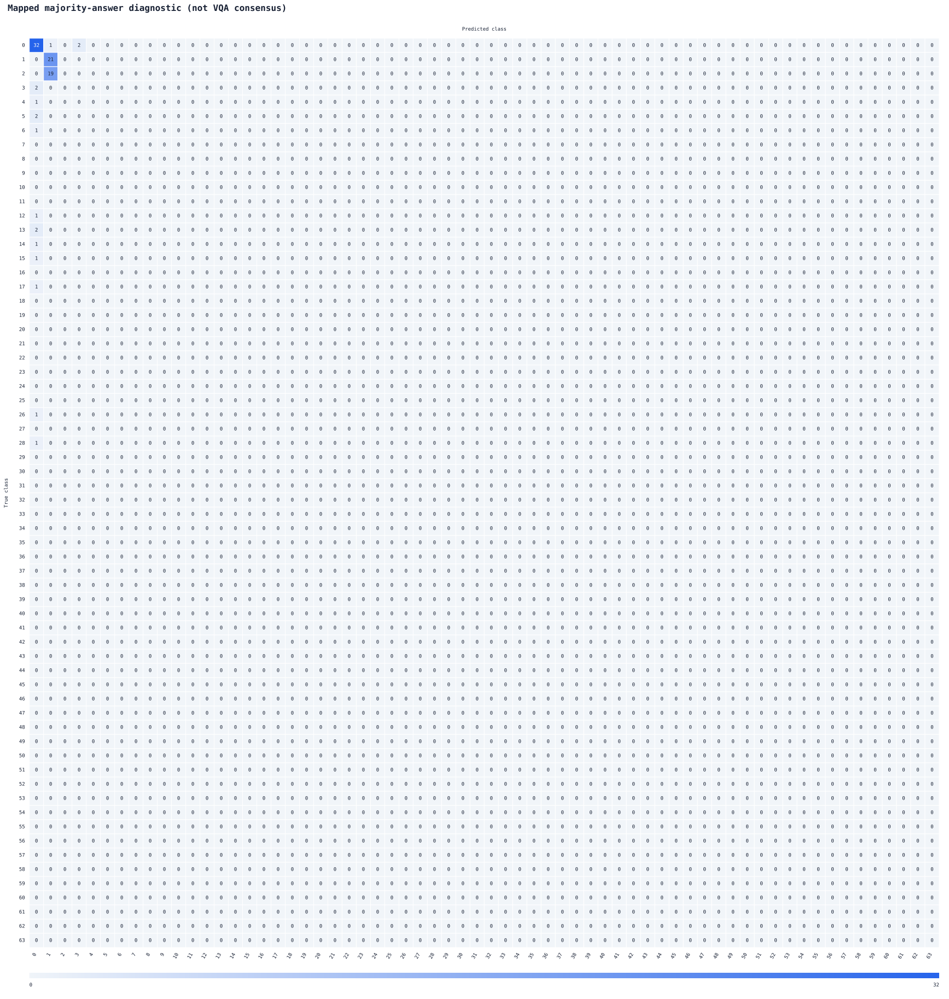

VQA:human questions,masked tensors and explicit optimizers
Abstract
A complete CNN plus masked-LSTM teaching model answers genuine human VQA-v2 questions attached to original COCO photos. Explicit SGD count references,three independently optimized modality models,coverage-aware metrics and actual held-out inputs reveal dataset shortcuts and the limits of this small fit.
Source example: examples/cpp/source/nn/1_convolutional_neural_networks/1.8_other_vision_tasks/vqa_baseline.cpp.
The method
Keep whole photographs and human questions source-disjoint,fit token/answer vocabularies only on fitting images,and train soft ten-answer cross-entropy. Freeze recurrent memory after each observed sequence length,then compare independently fitted joint,image-only and question-only graphs. All numerical preparation,forward/loss/optimization,metrics and plotted values use tensors.
The concept diagram below is drawn by dm::graphics::Diagram. Its editable C++
source is the complete block below; regeneration uses the same datamunge toolchain
as the numerical examples. Exports consume the saved local SVG.
#include <dm/dm.hpp>
int main() {
std::filesystem::create_directories("build");
dm::graphics::Diagram diagram;
diagram.node("n0", {0.0, 0}, "Original photos\n and human text");
diagram.node("n1", {5.2, 0}, "CNN and masked\n question memory");
diagram.node("n2", {10.4, 0}, "Soft answers\n and held-out checks");
diagram.edge("n0", "n1").edge("n1", "n2");
diagram.save_svg("build/vqa_baseline_concept.svg");
}
Executed tensor architecture
This figure executes the inference configuration shown in the code, using a zero-valued shape probe without fitting or loading a checkpoint. Named stage boundaries group whole subgraphs where available; other nodes retain functional-layer detail. Exact batch-inclusive shapes and reachable parameter totals come from the trace. Shared linear scales map spatial dimensions and channel counts to blocks; the one-pixel visibility floor is disclosed in the legend. Labels use compact monospace text, rotate counterclockwise and sit beside their own glyphs. Arrows flow left to right; wide diagrams scroll at native size on the website.
#include <dm/dm.hpp>
int main() {
namespace n = dm::nn;
namespace m = n::models;
n::set_num_threads(2);
std::filesystem::create_directories("build");
n::ParameterStore p(277);
const m::VqaConfig c{342, 64, 24, 16, 32, 32, 64};
const auto mode = m::VqaMode::kJoint;
n::Module architecture_model(
[&](const n::Tensor& image) {
return m::VqaBaseline(
p,
image,
n::zeros({1, c.time}, n::DType::Int32),
n::ones({1}, n::DType::Int32),
c,
mode)
.logits;
},
"VQA:human questions,masked tensors and explicit optimizers");
n::ModelPlotOptions options;
options.style = n::ModelPlotStyle::Flow;
options.detail = n::ModelPlotDetail::Blocks;
options.labels = {.type = n::ModelPlotLabel::NameAndShape, .size = 12, .wrap = 24};
options.spacing = {.layer = 24, .lane = 12, .label = 8, .margin = 20};
options.sizing.spatial_size = 96;
options.sizing.channel_size = 42;
options.sizing.minimum_extent = 1;
options.opacity = .8;
const auto diagram = architecture_model.plot(n::zeros({1, 64, 64, 3}), options);
diagram.save_svg("build/vqa_baseline_architecture.svg");
std::print(
"{} displayed nodes; {} reachable learned values.\n",
diagram.nodes().size(),
diagram.parameter_count());
}23 displayed nodes; 114128 reachable learned values.

A recurrent question encoder must ignore padding
Embed the24 observed token IDs and run one shared LSTM in i/f/g/o gate order,with forget bias1 at initialization. Freeze both hidden and cell state once each row reaches its observed length. Length0 retains the initial0. Padding content receives no gradient;reordering real words can change the answer. There is one learned embedding and one recurrent parameter set, not24 independent LSTMs. The probe below displays actual hidden activations and the padding token's exact zero embedding adjoint.
#include <dm/dm.hpp>
int main() {
namespace n = dm::nn;
namespace m = n::models;
n::set_num_threads(2);
m::VqaConfig c;
c.vocabulary = 8;
c.time = 4;
c.embedding = 3;
c.hidden = 3;
n::ParameterStore p(283);
const auto ids = n::tensor({2, 3, 0, 0, 4, 5, 6, 0}, {2, 4}).to(n::DType::Int32);
const auto lengths = n::tensor({2, 3}, {2}).to(n::DType::Int32);
const auto q = m::VqaLstm(p, ids, lengths, c);
const auto derivatives = n::grad(n::sum(q.h), p.parameters());
const auto states = n::stack(q.steps, 1);
const auto pad_gradient = n::select(derivatives[0], 0, 0);
n::NoGradGuard guard;
const auto changed = n::tensor({2, 3, 7, 6, 4, 5, 6, 7}, {2, 4}).to(n::DType::Int32);
const auto parity = n::max(n::abs(m::VqaLstm(p, changed, lengths, c).h - q.h));
std::print(
"Changed padding parity {:.3g};padding-token embedding adjoint max {:.3g};all4 "
"shared parameter leaves.\n",
parity.item(),
n::max(n::abs(pad_gradient)).item());
const double scale = n::max(n::abs(states)).item();
auto a = n::plot_tensor_map(n::reverse(n::select(states, 0, 0), {0}), -scale, scale),
b = n::plot_tensor_map(n::reverse(n::select(states, 0, 1), {0}), -scale, scale);
a.title("Length2 freezes after step2").x_label("hidden coordinate").y_label("time0 at bottom");
b.title("Length3 freezes after step3").x_label("hidden coordinate").y_label("time0 at bottom");
auto layout = dm::graphics::RLayout::create(1, 2);
layout.add(a).add(b).size(1100, 500).fit_panels().save_svg("build/vqa_baseline_masked_lstm.svg");
}Changed padding parity 0;padding-token embedding adjoint max 0;all4 shared parameter leaves.

Ten human answers define a soft target and a separate score
Train on mean human-answer frequencies,including out-of-vocabulary mass in UNK0. Stable cross-entropy is -mean sum frequency*log_softmax(logits). Its derivative keeps the observed target mass;it does not first collapse the ten answers to one hard label.
Evaluation averages min(other_matching/3,1) across held-out annotators. With ten answers,matching counts0/1/2/3/4 give0/.3/.6/.9/1. This differs from min(matching/3,1). UNK predictions always score0,and UNK-majority matches never count exact-correct. The score here applies to the declared mapped answer strings,not the complete official evaluator.
#include <dm/dm.hpp>
int main() {
namespace n = dm::nn;
namespace m = n::models;
const auto z = n::tensor({1000., 999., 998., -2., 1., .5}, {2, 3}).requires_grad_();
const auto target = n::tensor({.6, .3, .1, 0., .2, .8}, {2, 3});
const auto loss = m::VqaSoftCE(z, target);
const auto gradient = n::grad(loss, {z})[0];
const auto exact = (n::softmax(z, 1) * n::sum(target, {1}, true) - target) / 2.;
const auto matching = n::arange(0, 11, 1, n::DType::Float64);
const auto consensus = (matching * n::clip((matching - 1.) / 3., 0., 1.) +
(10. - matching) * n::clip(matching / 3., 0., 1.)) /
10.;
std::print(
"Large-logit soft CE {:.6f};every analytic adjoint max error {:.3g};2/10 "
"matching consensus {:.6f}.\n",
loss.item(),
n::max(n::abs(gradient - exact)).item(),
m::VqaConsensusCount(2));
auto a = n::plot_tensor_map(n::reverse(gradient, {0}), -.4, .4),
b = dm::graphics::RPlot::create();
a.title("Soft-answer logit derivatives").x_label("answer class").y_label("question0 at bottom");
b.lines(
matching.to_vector<double>(), consensus.to_vector<double>(), "leave-one-out", {37, 99, 235})
.lines(
matching.to_vector<double>(),
n::clip(matching / 3., 0., 1.).to_vector<double>(),
"min(count/3,1)",
{220, 38, 38})
.title("Ten-annotator consensus formula")
.x_label("matching normalized human answers")
.y_label("answer score")
.y_limits(0, 1.35);
auto layout = dm::graphics::RLayout::create(1, 2);
layout.add(a).add(b).size(1100, 500).fit_panels().save_svg("build/vqa_baseline_soft_answers.svg");
}Large-logit soft CE 0.906101;every analytic adjoint max error 1.49e-08;2/10 matching consensus 0.600000.

Separate unimodal models reveal dataset shortcuts
The image encoder centers RGB by.5 and uses three blocks of two3x3 SAME He/ReLU convolutions plus VALID2x2 pooling. A global average projects to a tanh image code. The masked LSTM projects its final hidden state with tanh. Joint fusion concatenates image,question and their elementwise product, then uses a tanh hidden dense layer and linear finite-answer logits. No pretrained encoder,BN or dropout is hidden in the model.
The source full configuration uses base64,embedding300,hidden256,fusion512. The compact fit uses8/32/32/64. Both retain all three CNN blocks and24 shared recurrent steps. The native suite runs full and compact backward,all24 joint learned leaves and both modality gradients. Question-only and image-only models omit the unused encoder and train independent stores. They are not zero-input evaluations of a jointly trained graph.
#include <dm/dm.hpp>
int main() {
namespace n = dm::nn;
namespace m = n::models;
n::set_num_threads(2);
n::NoGradGuard guard;
std::print(
"| graph | mode | learned values | learned leaves | staged activations | "
"recurrent steps |\n|---|---|---:|---:|---:|---:|\n");
for (bool compact : {false, true})
for (auto mode : {m::VqaMode::kJoint, m::VqaMode::kQuestion, m::VqaMode::kImage}) {
m::VqaConfig c;
if (compact) {
c.base = 8;
c.embedding = 32;
c.hidden = 32;
c.fusion = 64;
}
n::ParameterStore p(277);
const auto out = m::VqaBaseline(
p,
n::full({2, 64, 64, 3}, .4),
n::ones({2, 24}, n::DType::Int32),
n::full({2}, 3., n::DType::Int32),
c,
mode);
std::print(
"| {} | {} | {} | {} | {} | {} |\n",
compact ? "compact" : "full",
m::VqaModeName(mode),
p.count(),
p.size(),
out.stages.size(),
out.question_steps.size());
}
}| graph | mode | learned values | learned leaves | staged activations | recurrent steps |
|---|---|---|---|---|---|
| full | joint | 2901320 | 24 | 14 | 24 |
| full | question_only | 1100040 | 10 | 4 | 24 |
| full | image_only | 1572480 | 18 | 13 | 0 |
| compact | joint | 58184 | 24 | 14 | 24 |
| compact | question_only | 29696 | 10 | 4 | 24 |
| compact | image_only | 28616 | 18 | 13 | 0 |
Genuine human questions,source-disjoint photos and visible SGD priors
The pinned VQA-v2 training-question and ten-answer annotation archives match85 original photographs from the pinned COCO128 cache. Exact COCO image IDs overlap between the2014 question release and2017 photo cache;they are not substituted images. All415 human questions remain attached to their original source photo. Sorted image IDs shuffled with seed271 give55 fitting, 15 validation and15 held-out photos:254/72/89 questions respectively. Questions of one photo always stay together. This is a custom teaching subset, not the released VQA train/validation partition or benchmark accuracy.
Fitting-only token/answer frequency ranking gives417 tokens including PAD0/UNK1 and64 answers including UNK0. Lowercase question tokens retain apostrophes, truncate to24 and right-pad0. Answer mapping lowercases,collapses whitespace, converts number words none/zero..ten,and removes a/an/the. It does *not* reprocess all official punctuation/contraction cases. Numeric targets retain all10 mapped human answers;UNK consensus is forced0. RGB/255 followed by legacy bilinear64px resizing uses tensors. The manifest retains archive SHA256, source photos,all selected questions,ten original mapped answers and split IDs.
#include <dm/dm.hpp>
int main() {
const std::filesystem::path cache = dm::datasets::data_home();
dm::datasets::prepare_example_data("vqa", (cache / "vqa").string());
}Fit the global add-one answer counts and each observed two-token-prefix count field using one explicit Double SGD(.5) step on summed squared count error. Only fitting frequencies enter the count targets. Global counts normalize first;known prefixes add their fitted local counts and renormalize. Unseen prefixes use the global distribution. The tensor closed-form count helper is a parity oracle only. This is a count-reference objective,not neural CE.
#include <dm/dm.hpp>
int main() {
namespace n = dm::nn;
namespace m = n::models;
n::set_num_threads(2);
std::filesystem::path cache;
if (const auto* p = std::getenv("DATAMUNGE_DATA_DIR"))
cache = p;
else if (const auto* p = std::getenv("XDG_CACHE_HOME"))
cache = std::filesystem::path(p) / "datamunge/datasets";
else
cache = std::filesystem::path(std::getenv("HOME")) / ".cache/datamunge/datasets";
std::filesystem::path root = cache / "vqa";
if (const auto* p = std::getenv("DATAMUNGE_VQA_DIR"))
root = p;
else
dm::datasets::prepare_example_data("vqa", root.string());
const auto split = m::LoadVqa(root);
const auto target = split.fit.target.to(n::DType::Float64);
const auto matching =
n::all(
n::equal(n::expand_dims(split.fit.prefix, 1), n::expand_dims(split.fit.prefix, 0)), {2})
.to(n::DType::Float64);
const auto global_target = n::sum(target, {0}, true) + 1.;
const auto local_target = n::matmul(matching, target);
n::ParameterStore p(281, n::DType::Float64);
const auto global = p.get("global_counts", global_target.shape(), n::init::zeros());
const auto local = p.get("prefix_counts", local_target.shape(), n::init::zeros());
n::OptimizerConfig options;
options.kind = n::OptimizerKind::Sgd;
n::Optimizer sgd(p, .5, options);
sgd.minimize(n::sum(n::square(global - global_target)) + n::sum(n::square(local - local_target)));
const auto matches = n::all(
n::equal(n::expand_dims(split.test.prefix, 1), n::expand_dims(split.fit.prefix, 0)), {2});
const auto indices = n::argmax(matches.to(n::DType::Int32), 1);
const auto exists = n::any(matches, {1}, true);
const auto g = global / n::sum(global, {1}, true);
const auto numerator = g + n::where(exists, n::gather(local, indices, 0), 0.);
const auto prior =
(numerator.to(n::DType::Float32).to(n::DType::Float64) / n::sum(numerator, {1}, true))
.to(n::DType::Float32);
const auto parity = n::max(n::abs(prior - m::VqaPrior(split.fit, split.test, true)));
if (parity.item() > 3e-8)
return 1;
std::filesystem::create_directories("build");
std::filesystem::create_directories("figures");
n::save_npz(
"build/vqa_baseline_sgd_prior.npz",
{{"global", global.detach()}, {"local", local.detach()}, {"prefix", split.fit.prefix}});
n::save_image_grid(
n::slice_axis(split.fit.rgb, 0, 0, 16), "build/vqa_baseline_inputs.png", 4, 0, 1, 2, 0, 2);
std::print(
"One visible SGD(.5) step,{} count leaves;count/parity max {:.3g};{} observed "
"test prefixes.\n| split | questions | source photos | known-majority fraction | "
"attainable mapped score |\n|---|---:|---:|---:|---:|\n",
p.count(),
parity.item(),
n::sum(exists.to(n::DType::Int32)).item<int>());
for (const auto& item : std::vector<std::pair<std::string, m::VqaData>>{
{"fitting", split.fit}, {"validation", split.validation}, {"test", split.test}}) {
const auto score =
m::ScoreVqa(n::ones_like(item.second.target) / double(split.config.answers), item.second);
std::set<int> images;
for (auto id : item.second.image_ids.to_vector<int>())
images.insert(id);
std::print(
"| {} | {} | {} | {:.6f} | {:.6f} |\n",
item.first,
item.second.rgb.size(0),
images.size(),
score.coverage,
score.oracle);
}
auto a = dm::graphics::RPlot::create(), b = dm::graphics::RPlot::create();
a.bars(
n::arange(0, split.config.answers).to_vector<double>(),
g.reshape({split.config.answers}).to_vector<double>(),
"SGD global",
{37, 99, 235})
.title("Fitting-only SGD answer frequencies")
.x_label("fit answer ID;0isUNK")
.y_label("add-one smoothed probability")
.y_limits(0, .25);
b.bars(
n::arange(0, 3).to_vector<double>(),
n::sum(n::one_hot(split.test.types, 3), {0}).to_vector<double>(),
"test questions",
{22, 163, 74})
.title("Original held-out answer types")
.x_label("0yes/no /1number /2other")
.y_label("human question count")
.y_limits(0, 55);
auto layout = dm::graphics::RLayout::create(1, 2);
layout.add(a).add(b).size(1100, 500).fit_panels().save_svg("build/vqa_baseline_data.svg");
}One visible SGD(.5) step,16320 count leaves;count/parity max 0;78 observed test prefixes.
| split | questions | source photos | known-majority fraction | attainable mapped score |
|---|---|---|---|---|
| fitting | 254 | 55 | 0.818898 | 0.865748 |
| validation | 72 | 15 | 0.638889 | 0.709722 |
| test | 89 | 15 | 0.606742 | 0.676404 |


Three independent fits expose every Adam update
For each modality,warm its complete learned graph before Adam(.001). Each batch computes the soft ten-answer CE and calls grad/step explicitly. All254 fitting questions appear once per epoch,batch8,three epochs:96 updates per model,288 total. Batch order seed281 and initialization277 are fixed. Validation NLL alone selects the best checkpoint. The89 held-out questions never enter the objective or checkpoint selection. There is no moving state. The untrained and selected learned predictions are saved for diagnostics.
#include <dm/dm.hpp>
int main() {
namespace n = dm::nn;
namespace m = n::models;
n::set_num_threads(2);
std::filesystem::path cache;
if (const auto* p = std::getenv("DATAMUNGE_DATA_DIR"))
cache = p;
else if (const auto* p = std::getenv("XDG_CACHE_HOME"))
cache = std::filesystem::path(p) / "datamunge/datasets";
else
cache = std::filesystem::path(std::getenv("HOME")) / ".cache/datamunge/datasets";
std::filesystem::path root = cache / "vqa";
if (const auto* p = std::getenv("DATAMUNGE_VQA_DIR"))
root = p;
else
dm::datasets::prepare_example_data("vqa", root.string());
const auto split = m::LoadVqa(root);
const auto c = split.config;
auto predict = [&](n::ParameterStore& p, const m::VqaData& d, m::VqaMode mode) {
n::NoGradGuard guard;
std::vector<n::Tensor> parts;
for (std::int64_t start = 0; start < d.rgb.size(0); start += 8) {
std::vector<std::size_t> rows;
for (auto i = start; i < std::min<std::int64_t>(start + 8, d.rgb.size(0)); ++i)
rows.push_back(i);
const auto b = m::VqaRows(d, rows);
parts.push_back(n::softmax(m::VqaBaseline(p, b.rgb, b.tokens, b.lengths, c, mode).logits, 1));
}
return n::concat(parts, 0);
};
std::vector<n::Tensor> histories;
for (auto mode : {m::VqaMode::kJoint, m::VqaMode::kQuestion, m::VqaMode::kImage}) {
const auto name = m::VqaModeName(mode);
n::ParameterStore p(277);
{
n::NoGradGuard guard;
m::VqaBaseline(
p,
n::zeros({1, 64, 64, 3}),
n::zeros({1, c.time}, n::DType::Int32),
n::ones({1}, n::DType::Int32),
c,
mode);
}
n::OptimizerConfig options;
options.kind = n::OptimizerKind::Adam;
n::Optimizer adam(p, .001, options);
n::BatchOrder order(split.fit.rgb.size(0), 8, 281);
const auto probe = m::VqaRows(split.fit, {0, 1, 2, 3, 4, 5, 6, 7});
double initial;
{
n::NoGradGuard guard;
initial = m::VqaSoftCE(
m::VqaBaseline(p, probe.rgb, probe.tokens, probe.lengths, c, mode).logits,
probe.target)
.item();
}
const auto untrained = predict(p, split.test, mode);
double best = INFINITY;
int selected = 0, updates = 0;
std::vector<n::Tensor> history;
std::print(
"\n| mode | epoch | fitting soft CE | validation NLL | validation mapped consensus "
"|\n|---|---:|---:|---:|---:|\n");
for (int epoch = 1; epoch <= 3; ++epoch) {
order.begin_epoch();
auto average = n::zeros({}, n::DType::Float64);
for (;;) {
const auto ids = order.next();
if (ids.empty())
break;
const auto b = m::VqaRows(split.fit, std::vector<std::size_t>(ids.begin(), ids.end()));
const auto out = m::VqaBaseline(p, b.rgb, b.tokens, b.lengths, c, mode);
const auto loss = m::VqaSoftCE(out.logits, b.target);
average = average + loss.detach().to(n::DType::Float64) * double(ids.size()) /
double(split.fit.rgb.size(0));
adam.step(n::grad(loss, p.parameters()));
++updates;
}
const auto score = m::ScoreVqa(predict(p, split.validation, mode), split.validation);
if (score.nll < best) {
best = score.nll;
selected = epoch;
n::NamedTensors save;
for (std::size_t i = 0; i < p.size(); ++i)
save.push_back({p.names()[i], p.parameters()[i]});
n::save_npz("build/vqa_baseline_" + name + "_best.npz", save);
}
history.push_back(
n::stack(
{average,
n::full({}, score.nll, n::DType::Float64),
n::full({}, score.consensus, n::DType::Float64)},
0));
std::print(
"| {} | {} | {:.6f} | {:.6f} | {:.6f} |\n",
name,
epoch,
average.item(),
score.nll,
score.consensus);
}
const auto checkpoint = n::load_npz("build/vqa_baseline_" + name + "_best.npz");
for (const auto& [key, value] : checkpoint)
p.set(key, value);
n::NoGradGuard guard;
const auto fitted = m::VqaSoftCE(
m::VqaBaseline(p, probe.rgb, probe.tokens, probe.lengths, c, mode).logits, probe.target);
const auto probability = predict(p, split.test, mode);
n::save_npz(
"build/vqa_baseline_" + name + "_outputs.npz",
{{"probability", probability},
{"untrained", untrained},
{"history", n::stack(history, 0)}});
if (name == "joint") {
n::ConfusionMatrix matrix(c.answers);
const auto predicted = n::argmax(probability, 1);
matrix.add(split.test.hard, predicted);
matrix.save_svg(
"build/vqa_baseline_majority_counts.svg",
{.title = "Mapped majority-answer diagnostic (not VQA consensus)",
.cell_size = 26,
.font_size = 9});
n::save_npz(
"build/vqa_baseline_verification.npz",
{{"truth", split.test.hard}, {"prediction", predicted}, {"counts", matrix.to_tensor()}});
}
histories.push_back(n::stack(history, 0));
std::print(
"{}:{} explicit Adam updates,selected epoch {},validation {:.6f};fixed fitting "
"probe {:.6f}->{:.6f};{} learned leaves.\n",
name,
updates,
selected,
best,
initial,
fitted.item(),
p.size());
}
const std::array<dm::graphics::RGB, 3> colors = {{{37, 99, 235}, {220, 38, 38}, {22, 163, 74}}};
const std::array<std::string, 3> labels = {"joint", "question only", "image only"};
auto a = dm::graphics::RPlot::create(), b = dm::graphics::RPlot::create();
const auto epochs = n::arange(1, 4).to_vector<double>();
for (int i = 0; i < 3; ++i) {
a.lines(epochs, n::select(histories[i], 1, 0).to_vector<double>(), labels[i], colors[i]);
b.lines(epochs, n::select(histories[i], 1, 1).to_vector<double>(), labels[i], colors[i]);
}
a.title("All 288 explicit Adam updates")
.x_label("epoch;96 updates per model")
.y_label("mean fitting soft-answer CE")
.y_limits(0, 5);
b.title("Separate validation model selection")
.x_label("epoch")
.y_label("mean validation soft-answer NLL")
.y_limits(0, 5);
auto layout = dm::graphics::RLayout::create(1, 2);
layout.add(a).add(b).size(1100, 500).fit_panels().save_svg("build/vqa_baseline_training.svg");
}| mode | epoch | fitting soft CE | validation NLL | validation mapped consensus |
|---|---|---|---|---|
| joint | 1 | 3.308996 | 2.321778 | 0.333333 |
| joint | 2 | 2.821658 | 2.266304 | 0.302778 |
| joint | 3 | 2.535057 | 1.888360 | 0.294444 |
joint:96 explicit Adam updates,selected epoch 3,validation 1.888360;fixed fitting probe 4.381061->2.348709;24 learned leaves.
| mode | epoch | fitting soft CE | validation NLL | validation mapped consensus |
|---|---|---|---|---|
| question_only | 1 | 3.932545 | 3.009894 | 0.302778 |
| question_only | 2 | 2.895241 | 2.250974 | 0.302778 |
| question_only | 3 | 2.679952 | 2.134731 | 0.302778 |
question_only:96 explicit Adam updates,selected epoch 3,validation 2.134731;fixed fitting probe 4.160641->2.730417;10 learned leaves.
| mode | epoch | fitting soft CE | validation NLL | validation mapped consensus |
|---|---|---|---|---|
| image_only | 1 | 3.231556 | 2.267292 | 0.318056 |
| image_only | 2 | 2.830140 | 2.285866 | 0.302778 |
| image_only | 3 | 2.792121 | 2.261470 | 0.302778 |
image_only:96 explicit Adam updates,selected epoch 3,validation 2.261470;fixed fitting probe 4.511797->2.773104;18 learned leaves.

Restore observed-input predictors and examine actual human questions
The restored forward call accepts RGB,token IDs,lengths and architecture only. Human answers,source IDs and question types are evaluation metadata. Restore separate stores,compare saved/repeated probabilities,check single/batch agreement and verify every learned leaf remains unchanged. Change only the image or only the observed question to expose which active modality affects each graph. Numerical sensitivity does not establish correct visual reasoning.
Evaluate learned and untrained models,the unchanged SGD global prior and the unchanged SGD prefix prior. Report known-majority coverage and the maximum mapped-string consensus attainable by any answer in the64-class vocabulary. The type scores retain original yes/no,number and other groups. Question-weighted results do not give each photograph equal weight.
#include <dm/dm.hpp>
int main() {
namespace n = dm::nn;
namespace m = n::models;
n::set_num_threads(2);
std::filesystem::path cache;
if (const auto* p = std::getenv("DATAMUNGE_DATA_DIR"))
cache = p;
else if (const auto* p = std::getenv("XDG_CACHE_HOME"))
cache = std::filesystem::path(p) / "datamunge/datasets";
else
cache = std::filesystem::path(std::getenv("HOME")) / ".cache/datamunge/datasets";
std::filesystem::path root = cache / "vqa";
if (const auto* p = std::getenv("DATAMUNGE_VQA_DIR"))
root = p;
else
dm::datasets::prepare_example_data("vqa", root.string());
const auto split = m::LoadVqa(root);
const auto c = split.config;
auto labels = m::VqaAnswers(root, c.answers);
labels[0] = "UNK0";
const auto text = m::VqaText(root);
const auto ids = split.test.image_ids.to_vector<int>();
std::size_t other = 1;
while (other < ids.size() && ids[other] == ids[0])
++other;
if (other == ids.size())
return 1;
auto predict = [&](n::ParameterStore& p, const m::VqaData& d, m::VqaMode mode) {
n::NoGradGuard guard;
std::vector<n::Tensor> parts;
for (std::int64_t start = 0; start < d.rgb.size(0); start += 8) {
std::vector<std::size_t> rows;
for (auto i = start; i < std::min<std::int64_t>(start + 8, d.rgb.size(0)); ++i)
rows.push_back(i);
const auto b = m::VqaRows(d, rows);
parts.push_back(n::softmax(m::VqaBaseline(p, b.rgb, b.tokens, b.lengths, c, mode).logits, 1));
}
return n::concat(parts, 0);
};
std::vector<std::pair<std::string, n::Tensor>> probabilities;
std::print(
"| mode | restored/repeat error | single/batch error | immutable leaves | image "
"change | question change |\n|---|---:|---:|---:|---:|---:|\n");
for (auto mode : {m::VqaMode::kJoint, m::VqaMode::kQuestion, m::VqaMode::kImage}) {
const auto name = m::VqaModeName(mode);
n::ParameterStore p(277);
{
n::NoGradGuard guard;
m::VqaBaseline(
p,
n::zeros({1, 64, 64, 3}),
n::zeros({1, c.time}, n::DType::Int32),
n::ones({1}, n::DType::Int32),
c,
mode);
}
for (const auto& [key, value] : n::load_npz("build/vqa_baseline_" + name + "_best.npz"))
p.set(key, value.clone());
std::vector<n::Tensor> before;
for (const auto& v : p.parameters())
before.push_back(v.clone());
const auto output = predict(p, split.test, mode);
const auto repeat = predict(p, split.test, mode);
n::Tensor saved, untrained;
for (const auto& [key, value] : n::load_npz("build/vqa_baseline_" + name + "_outputs.npz")) {
if (key == "probability")
saved = value;
else if (key == "untrained")
untrained = value;
}
const auto parity = n::maximum(n::max(n::abs(output - saved)), n::max(n::abs(output - repeat)));
const auto single = predict(p, m::VqaRows(split.test, {3}), mode);
const auto batch_error = n::max(n::abs(single - n::slice_axis(output, 0, 3, 4)));
const auto original = m::VqaRows(split.test, {0});
auto changed_image = original;
changed_image.rgb = m::VqaRows(split.test.rgb, {other});
auto changed_question = original;
changed_question.tokens = m::VqaRows(split.test.tokens, {1});
changed_question.lengths = m::VqaRows(split.test.lengths, {1});
const auto observed = predict(p, original, mode);
const auto image_change = n::mean(n::abs(predict(p, changed_image, mode) - observed));
const auto question_change = n::mean(n::abs(predict(p, changed_question, mode) - observed));
bool immutable = true;
for (std::size_t i = 0; i < before.size(); ++i)
immutable = immutable && n::all(n::equal(before[i], p.parameters()[i])).item<bool>();
if (parity.item() > 1e-7 || batch_error.item() > 2e-6 || !immutable)
return 1;
if ((mode == m::VqaMode::kQuestion && image_change.item() != 0) ||
(mode == m::VqaMode::kImage && question_change.item() != 0))
return 1;
if ((mode != m::VqaMode::kQuestion && image_change.item() <= 1e-7) ||
(mode != m::VqaMode::kImage && question_change.item() <= 1e-7))
return 1;
std::print(
"| {} | {:.3g} | {:.9g} | {} unchanged:{} | {:.9g} | {:.9g} |\n",
name,
parity.item(),
batch_error.item(),
p.size(),
immutable,
image_change.item(),
question_change.item());
probabilities.push_back({name, output});
probabilities.push_back({name + " initial", untrained});
}
n::Tensor global, local, prefix;
for (const auto& [name, value] : n::load_npz("build/vqa_baseline_sgd_prior.npz")) {
if (name == "global")
global = value;
else if (name == "local")
local = value;
else
prefix = value;
}
n::NoGradGuard guard;
const auto g = global / n::sum(global, {1}, true);
const auto matches =
n::all(n::equal(n::expand_dims(split.test.prefix, 1), n::expand_dims(prefix, 0)), {2});
const auto index = n::argmax(matches.to(n::DType::Int32), 1);
const auto exists = n::any(matches, {1}, true);
const auto numerator = g + n::where(exists, n::gather(local, index, 0), 0.);
const auto gp =
(g + n::zeros_like(split.test.target).to(n::DType::Float64)).to(n::DType::Float32);
const auto pp =
(numerator.to(n::DType::Float32).to(n::DType::Float64) / n::sum(numerator, {1}, true))
.to(n::DType::Float32);
probabilities.push_back({"SGD global", gp});
probabilities.push_back({"SGD prefix", pp});
std::vector<n::Tensor> metrics;
std::vector<std::string> metric_labels;
std::print(
"\n| predictor | soft NLL | mapped consensus | majority exact | known majority | "
"vocabulary oracle | yes/no score | number score | other score "
"|\n|---|---:|---:|---:|---:|---:|---:|---:|---:|\n");
for (std::size_t i = 0; i < probabilities.size(); ++i) {
const auto& item = probabilities[i];
const auto score = m::ScoreVqa(item.second, split.test);
std::print(
"| {} | {:.6f} | {:.6f} | {:.6f} | {:.6f} | {:.6f} | {:.6f} | {:.6f} | {:.6f} |\n",
item.first,
score.nll,
score.consensus,
score.exact,
score.coverage,
score.oracle,
score.type_score[0],
score.type_score[1],
score.type_score[2]);
if (i % 2 == 0 || i >= 6) {
metrics.push_back(
n::from_vector(
std::vector<double>{
score.nll,
score.consensus,
score.type_score[0],
score.type_score[1],
score.type_score[2]},
{5}));
metric_labels.push_back(item.first);
}
}
const auto probability = probabilities[0].second;
const auto tiles = m::VqaPreviewTiles(split.test, probability);
n::save_image_grid(tiles, "build/vqa_baseline_test.png", 4, 0, 1, 0, 0, 2);
const auto predicted = m::VqaAnswerIds(probability).to_vector<std::int64_t>();
const auto qids = split.test.question_ids.to_vector<std::int64_t>();
const auto scores =
n::sum(n::one_hot(m::VqaAnswerIds(probability), c.answers) * split.test.score, {1})
.to_vector<float>();
std::print(
"\nFirst16 original held-out questions,display order matches preview tiles.\n\n| "
"question ID | COCO image | actual human question | mapped majority | joint "
"answer | mapped score |\n|---:|---:|---|---|---|---:|\n");
for (int i = 0; i < 16; ++i) {
auto question = text.at(qids[i]).first;
std::replace(question.begin(), question.end(), '|', '/');
std::print(
"| {} | {} | {} | {} | {} | {:.3f} |\n",
qids[i],
ids[i],
question,
text.at(qids[i]).second=="<UNK>"?"UNK0":text.at(qids[i]).second,
labels[predicted[i]],
scores[i]);
}
const auto measured = n::stack(metrics, 0);
auto a = dm::graphics::RPlot::create(), b = dm::graphics::RPlot::create();
const auto x = n::arange(0, 5).to_vector<double>();
a.points(x, n::select(measured, 1, 1).to_vector<double>(), "consensus", {37, 99, 235})
.title("Held-out mapped human consensus")
.x_label("predictor index (see caption)")
.y_label("question-weighted score")
.y_limits(0, .55);
const std::array<dm::graphics::RGB, 3> colors = {{{37, 99, 235}, {220, 38, 38}, {22, 163, 74}}};
const std::array<std::string, 3> names = {"yes/no", "number", "other"};
for (int type = 0; type < 3; ++type)
b.points(x, n::select(measured, 1, type + 2).to_vector<double>(), names[type], colors[type]);
b.title("Original answer-type diagnostics")
.x_label("predictor index (see caption)")
.y_label("mapped consensus by type")
.y_limits(0, 1.1);
auto layout = dm::graphics::RLayout::create(1, 2);
layout.add(a).add(b).size(1100, 500).fit_panels().save_svg("build/vqa_baseline_metrics.svg");
}| mode | restored/repeat error | single/batch error | immutable leaves | image change | question change |
|---|---|---|---|---|---|
| joint | 0 | 0 | 24 unchanged:true | 2.27409946e-05 | 0.010699736 |
| question_only | 0 | 0 | 10 unchanged:true | 0 | 0.00522722397 |
| image_only | 0 | 0 | 18 unchanged:true | 0.000515481282 | 0 |
| predictor | soft NLL | mapped consensus | majority exact | known majority | vocabulary oracle | yes/no score | number score | other score |
|---|---|---|---|---|---|---|---|---|
| joint | 1.700554 | 0.308989 | 0.235955 | 0.606742 | 0.676404 | 0.687500 | 0.000000 | 0.000000 |
| joint initial | 4.361802 | 0.000000 | 0.000000 | 0.606742 | 0.676404 | 0.000000 | 0.000000 | 0.000000 |
| question_only | 2.028432 | 0.312360 | 0.235955 | 0.606742 | 0.676404 | 0.687500 | 0.000000 | 0.007317 |
| question_only initial | 4.159588 | 0.011236 | 0.011236 | 0.606742 | 0.676404 | 0.000000 | 0.000000 | 0.024390 |
| image_only | 2.140725 | 0.312360 | 0.235955 | 0.606742 | 0.676404 | 0.687500 | 0.000000 | 0.007317 |
| image_only initial | 4.445211 | 0.000000 | 0.000000 | 0.606742 | 0.676404 | 0.000000 | 0.000000 | 0.000000 |
| SGD global | 2.230419 | 0.312360 | 0.235955 | 0.606742 | 0.676404 | 0.687500 | 0.000000 | 0.007317 |
| SGD prefix | 1.500836 | 0.392135 | 0.258427 | 0.606742 | 0.676404 | 0.767500 | 0.362500 | 0.031707 |
First16 original held-out questions,display order matches preview tiles.
| question ID | COCO image | actual human question | mapped majority | joint answer | mapped score |
|---|---|---|---|---|---|
| 72000 | 72 | How many Giraffes are in this image? | 2 | UNK0 | 0.000 |
| 72001 | 72 | What is the giraffe eating? | UNK0 | UNK0 | 0.000 |
| 72002 | 72 | Are the giraffes under the trees? | yes | yes | 1.000 |
| 81000 | 81 | Does this planes tail have 4 colors? | no | yes | 0.600 |
| 81001 | 81 | Is this plane landing? | no | yes | 0.600 |
| 81002 | 81 | Is this plane taking off? | no | yes | 1.000 |
| 81003 | 81 | What is the last letter over the plane? | UNK0 | UNK0 | 0.000 |
| 81004 | 81 | Are these wings strong? | yes | yes | 1.000 |
| 86000 | 86 | Is that a bicycle? | yes | yes | 1.000 |
| 86001 | 86 | What is the number on the mailbox? | UNK0 | UNK0 | 0.000 |
| 86002 | 86 | What is this person wearing on head? | UNK0 | UNK0 | 0.000 |
| 89000 | 89 | Is the stove light on? | yes | yes | 1.000 |
| 89001 | 89 | What color is the microwave? | black | UNK0 | 0.000 |
| 89002 | 89 | Is that a stove? | yes | yes | 1.000 |
| 142000 | 142 | What type of fruit is on the plate? | UNK0 | UNK0 | 0.000 |
| 142001 | 142 | Is this a banana toast? | yes | yes | 1.000 |


The selected joint model has mapped consensus.308989,below the SGD prefix reference.392135 and question-only/image-only.312360. Its number/other groups both score0;yes/no questions account for its positive consensus. Known-majority coverage is.606742 and the vocabulary-limited score ceiling is.676404. The joint model improves NLL over its initialization,but this run does not demonstrate useful visual grounding or a joint-model advantage.
Verification and limits
Six native tests execute independent LSTM state equations and finite differences for every embedding/input/recurrent/bias coordinate,stable large-logit soft CE and every logit adjoint,the official ten-annotator count sequence,and full/compact model backward. Every prepared source JPEG pixel,all415 questions' original numeric metadata,ten-answer frequencies,consensus,hard labels and prefixes match literal independent formulas. Every metric,source prior and preview pixel matches retained host oracles. Exact Int64 question IDs remain intact.
The public Doxygen examples compile/run,all three canonical headers include independently,and the original three-model workflow executes. Neither repeated photos,finite answer coverage,numerical modality sensitivity nor a reduced fitting loss proves useful grounded question answering. The model comparison and actual human-question predictions expose those limits directly.
Regenerate adjacent views from this run
#include <dm/dm.hpp>
int main() {
std::filesystem::copy_file(
"build/vqa_baseline_inputs.png",
"build/export_vqa_baseline_inputs.png",
std::filesystem::copy_options::overwrite_existing);
}#include <dm/dm.hpp>
int main() {
std::filesystem::copy_file(
"build/vqa_baseline_test.png",
"build/export_vqa_baseline_test.png",
std::filesystem::copy_options::overwrite_existing);
}Mapped majority-answer diagnostic
This count matrix uses the loader's mapped majority answer and the joint model's highest-probability answer. UNK0 remains visible. This auxiliary hard-label view does not replace the ten-human-answer soft objective or consensus score above; those remain the primary evaluation.
#include <dm/dm.hpp>
int main() {
std::filesystem::copy_file(
"build/vqa_baseline_majority_counts.svg",
"build/export_vqa_baseline_majority_counts.svg",
std::filesystem::copy_options::overwrite_existing);
}
Conclusion
Visible optimizers and source-image-held-out comparisons make this experiment reproducible. The finite vocabulary and question-only/count references expose shortcuts;actual held-out text and photos determine whether the learned joint model adds value. These custom mapped-string scores are not official VQA benchmark accuracy.
References
- [Antol et al.(2015),VQA:Visual Question Answering](https://arxiv.org/abs/1505.00468).
- [Official VQA-v2 dataset downloads](https://visualqa.org/download.html).
- [Official leave-one-annotator-out evaluation](https://github.com/GT-Vision-Lab/VQA/blob/master/PythonEvaluationTools/vqaEvaluation/vqaEval.py).
- [Goyal et al.(2017),Making the V in VQA Matter](https://arxiv.org/abs/1612.00837).